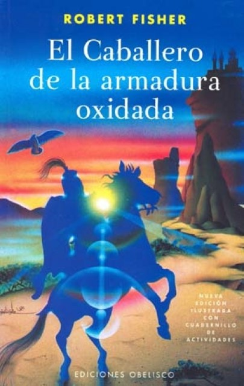

El caballero de la armadura oxidada -publicado en 1993 por Robert Fisher- es una hermosa y corta historia que deja un mensaje positivo a todos los lectores. Habla de conocerse a sí mismo y de pasar por muchos obstáculos para lograr la paz y la felicidad. Para transmitir este mensaje cuenta las pericias de un caballero obsesionado con su armadura y con derrotar a sus adversarios.